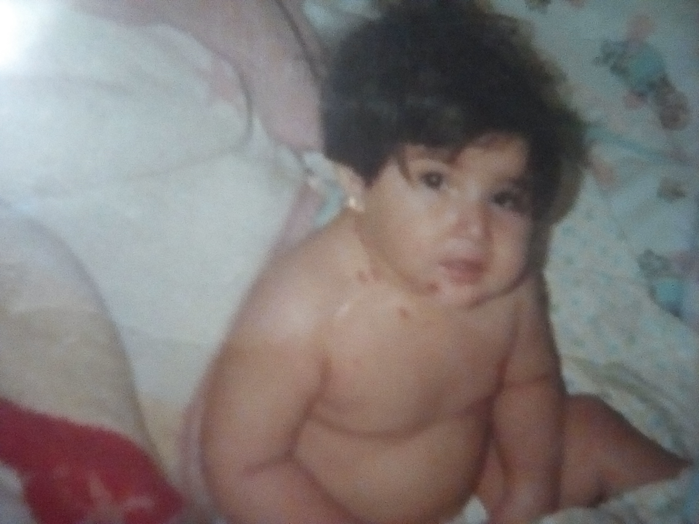
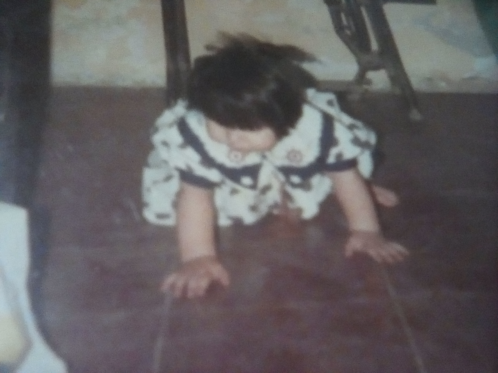

FLORA CAROLINA MORENO CAMACHO
BEBE
NIÑEZ
JOVEN
PRINCIPAL

VARICELA
Cuando tenía 11 meses me pegó varicela en la cual me tenían que bañar en agua con golondrina,
me daban temperaturas altas de 39° y unas ronchitas de las cuales me quedaron unas marcas
porque me rascaba mucho, se me contagio porque mi hermana mayor se había contagiado en el kínder.

ANIMALITOS
Yo siempre he tenido un fanatismo por los animalitos, mi papa me cuenta que el agarraba los alacranes,
les quitaba la ponzoña y después me los daba en la mano, cuenta que un día mi mama estando en el comedor
entre yo de afuera con un mata venados en la mano y mi mama se asustó porque lo había agarrado me lo
quitó de la mano y lo mato, y a mí me tuvieron que comprar un jugo porque no me podían quitar el llanto.